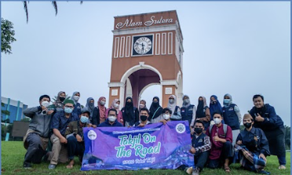
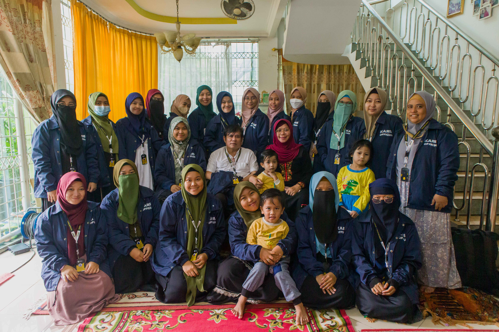
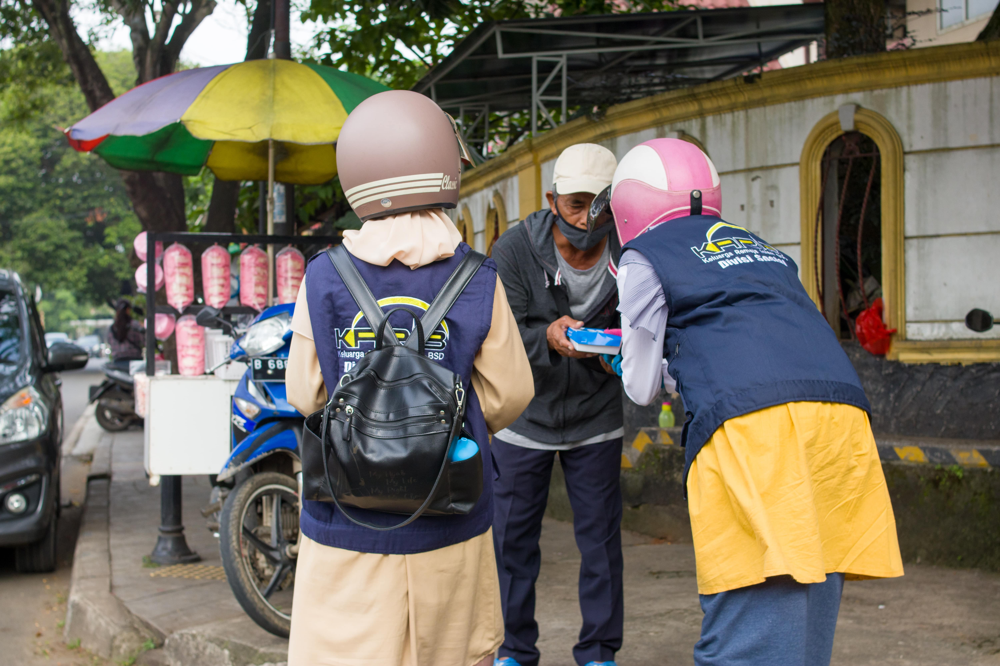
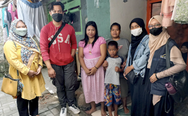

Tentang Kami
KARIB adalah organisasi yang memiliki kepanjangan - KELUARGA REMAJA ISLAM BSD, FORUM MASJID DAN MUSHOLLA SE-BSD, yang selanjutnya disebut KARIB FMMB
KARIB FMMB didirikan pada 10 April 2011, yang berkedudukan dibawah asuhan FMMB khususnya Seksi Pemuda, Olahraga, dan Seni. KARIB FFMB berAsaskan Aqidah Ahlusunnah Wal Jamaah, yang bersifat kekeluargaan dan persaudaraan.
Visi :
- Mensyiarkan Islam dikalangan umat Islam dan remaja/ pemuda pada khususnya.
- Menjalin rasa kekeluargaan antar sesama anggota.
- Membina dan meningkatkan peran umat Islam dalam kegiatan sosial kemasyarakatan menuju masyarakat Islami / BSD KOTA SANTRI.
Misi :
- Menambah ilmu dan wawasan keislaman bagi pribadi dan organisasi.
- Melakukan kegiatan sosial kemasyarakatan dalam rangka menumbuhkan kepekaan dan kepedulian sosial.
- Mengajak Pemuda dan Remaja muslim untuk turut serta dalam memakmurkan masjid.
- Membekali pemuda dan Remaja dengan kajian keislaman.
Tujuan :
- Mensyiarkan Islam dikalangan umat Islam dan remaja/ pemuda pada khususnya.
- Menjalin rasa kekeluargaan antar sesama anggota dan bekerja sama dengan organisasi lain.
- Membina dan meningkatkan peran umat Islam dalam kegiatan sosial kemasyarakatan menuju masyarakat Islami.
- KARIB-FMMB sejalan dengan tujuan dari Forum Masjid Musholla BSD dan sekitarnya, yaitu bertujuan menciptakan masyarakat BSD Kota Santri. SANTRI = pelajar yang ber-aqidah Ahlusunnah Wal Jamaah
Aktivitas Kami
Takjil on the road

Halal Bihalal 2022

Turlap

Adik Asuh

Kajian Akhwat